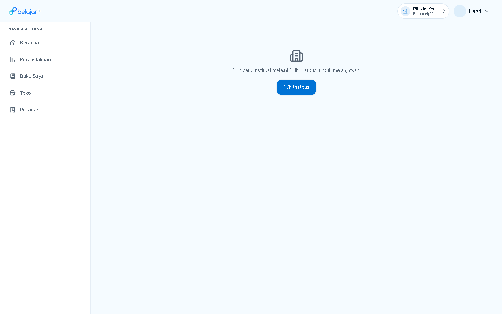
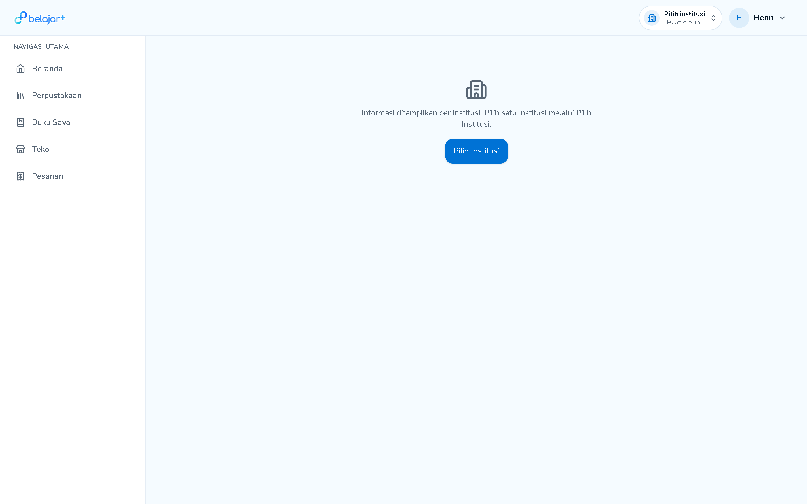
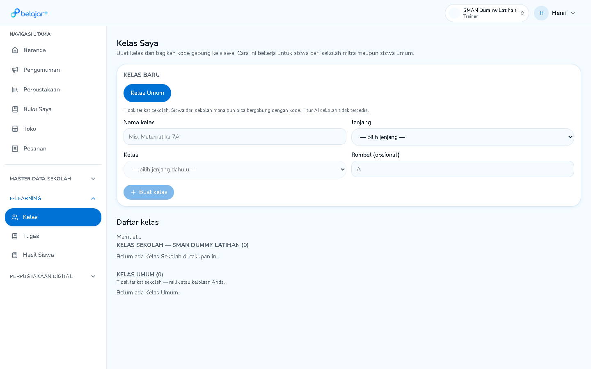
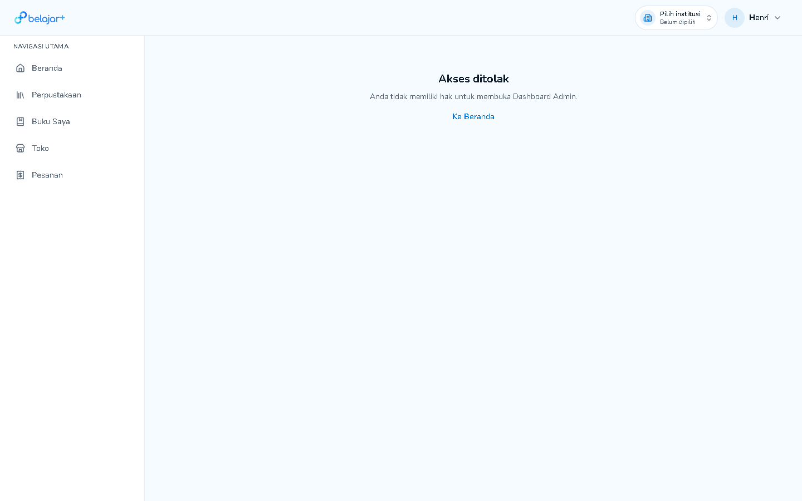
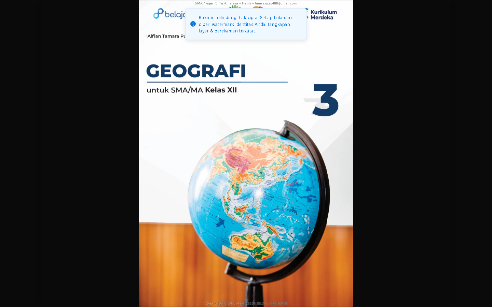
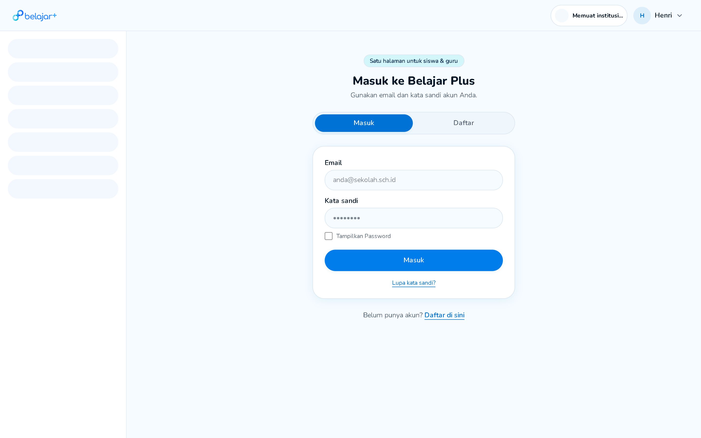
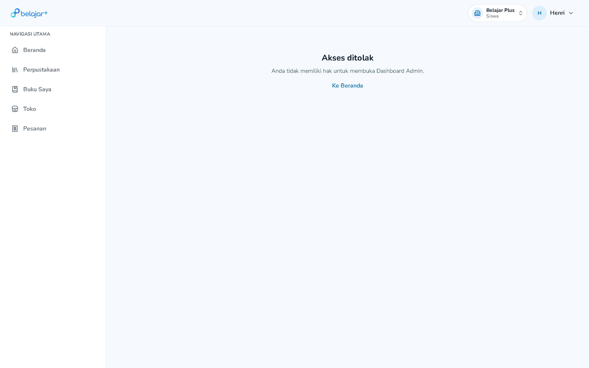
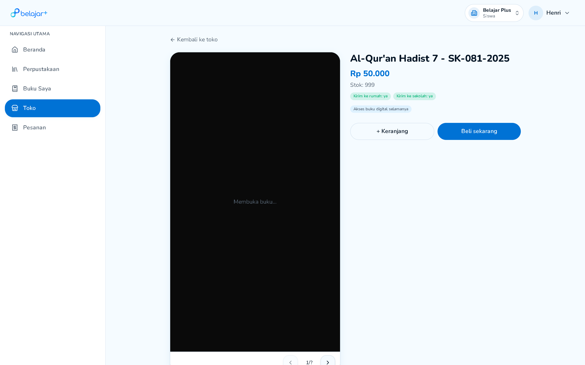
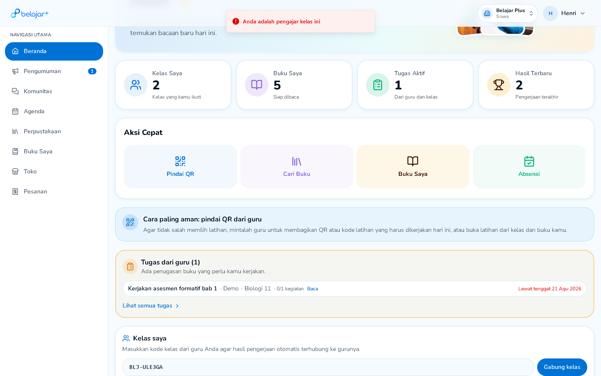
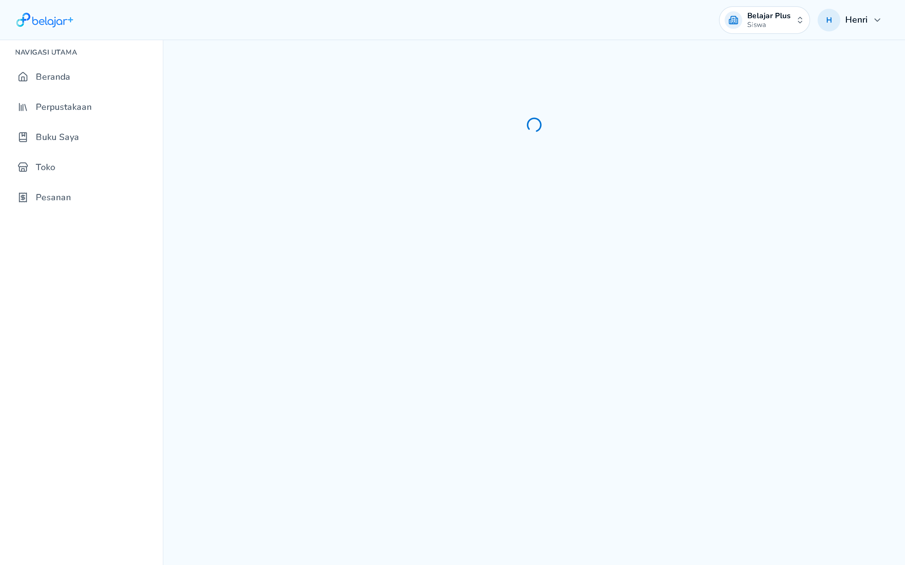

1. Deskripsi Gejala
Pada kartu kelas siswa di antarmuka dashboard Pembelajaran Saya, nama rombel mata pelajaran Matematika tertera dengan huruf 'M' ganda: "Mmatematika Kelas 12" (Guru: Rumaisha' Al Mawaddah). String ini dirender langsung tanpa proses sanitasi/normalisasi teks di layer presentasi.
2. Dampak Terhadap Pengguna
Mengurangi kredibilitas profesionalitas platform di mata sekolah, siswa, dan orang tua murid. Mengindikasikan ketiadaan filter validasi nama kelas saat guru atau sistem seeding menginput rombel kelas.
3. Langkah Reproduksi
- Login menggunakan akun siswa (
henrisusilo00@gmail.com).
- Pilih institusi Belajar Plus (Siswa) untuk masuk ke
/dashboard.
- Scroll ke bawah menuju section "Kelas saya".
- Amati judul kartu kelas pertama yang menampilkan teks
"Mmatematika Kelas 12".
4. Rekomendasi Solusi & Patch Rekayasa
Tambahkan sanitasi regex di form input nama kelas admin/guru serta normalisasi teks di utilitas helper frontend:
// src/utils/formatters.ts
export function sanitizeClassName(name: string): string {
if (!name) return '';
// Normalisasi spasi dan perbaiki double initial character hasil kesalahan ketik
return name.trim().replace(/^([a-zA-Z])\1([a-z]+)/i, (match, p1, p2) => {
return p1.toUpperCase() + p2;
});
}

📸 Bukti Visual: Judul kartu kelas tertulis "Mmatematika Kelas 12" pada section Kelas Saya
1. Deskripsi Gejala
Ketika tombol submit "Masuk" diklik dalam kondisi input belum ter-bind penuh oleh event synthetic React (seperti saat menggunakan autofill browser pihak ketiga atau pengisian otomatis ekstensi password manager), elemen <form> mengeksekusi aksi standar browser GET submission dengan query string /auth?. Ini memicu reload penuh dan mengosongkan seluruh field isian.
2. Dampak Terhadap Pengguna
Siswa atau orang tua yang menggunakan fitur simpan sandi browser Chrome/Edge sering kali mendapati halaman me-refresh sendiri tanpa pesan error yang jelas dan harus mengetik ulang sandi dari awal.
3. Langkah Reproduksi
- Buka
https://belajarplus.id/auth.
- Gunakan ekstensi auto-fill password atau script programatis untuk mengisi field email dan kata sandi tanpa memicu event
input atau change keyboard.
- Klik tombol "Masuk".
- URL browser ter-redirect ke
https://belajarplus.id/auth? dan seluruh inputan ter-reset.
4. Rekomendasi Solusi & Patch Rekayasa
Kunci penanganan submit form pada tag <form> menggunakan e.preventDefault() eksplisit dan dukung binding input uncontrolled fallback:
// Di komponen LoginForm:
<form
onSubmit={(e) => {
e.preventDefault();
const formData = new FormData(e.currentTarget);
const email = formData.get('email') || emailState;
const password = formData.get('password') || passwordState;
handleLogin({ email, password });
}}
>
...
</form>

📸 Formulir Masuk pada /auth yang rentan memicu form reload jika onChange tidak tersinkronisasi
1. Deskripsi Gejala
Setiap kali pengguna berhasil login, sistem selalu memvalidasi tenancy dengan mendarat di layar perantara "Pilih institusi untuk melanjutkan". Tidak ada mekanisme penyimpanan preferensi institusi terakhir yang aktif (Last Active Tenant). Pengguna harus selalu mengeklik tombol "Masuk" pada institusi yang sama setiap kali membuka aplikasi.
2. Dampak Terhadap Pengguna
Menambah friksi 1 langkah ekstra (extra click) bagi seluruh siswa di setiap sesi belajar baru, padahal mayoritas siswa hanya aktif pada 1 institusi sekolah utama.
3. Rekomendasi Solusi & Patch Rekayasa
Terapkan auto-redirect cerdas saat login berhasil jika ditemukan last_active_institution_id di local storage atau jika akun hanya memiliki 1 peran tunggal:
// In router auth middleware:
const savedTenant = localStorage.getItem('bp_last_tenant_id');
if (userInstitutions.length === 1) {
selectInstitution(userInstitutions[0].id);
} else if (savedTenant && userInstitutions.some(i => i.id === savedTenant)) {
selectInstitution(savedTenant);
} else {
// Tampilkan layar pilih institusi
showInstitutionSelector();
}

📸 Layar pemilih institusi yang selalu muncul berulang kali di setiap sesi login
1. Deskripsi Gejala
Ketika siswa membuka fitur Pindai QR dari laptop lab sekolah yang tidak memiliki webcam atau saat siswa secara tidak sengaja menekan opsi "Block Camera" pada permission prompt browser, layar pemindai hanya menampilkan viewport kosong gelap tanpa opsi alternatif untuk mengetikkan kode token paket soal secara manual.
2. Dampak Terhadap Pengguna
Siswa yang menghadapi kendala kamera fisik tidak dapat mengerjakan ulangan atau absensi yang disebarkan guru melalui format QR code.
3. Rekomendasi Solusi & Patch Rekayasa
Tambahkan handler state error kamera yang merender formulir input kode alfanumerik manual sebagai fallback:
try {
await startCameraStream();
} catch (cameraErr) {
setCameraError(true);
// Tampilkan UI Fallback:
// "Kamera tidak terdeteksi atau izin ditolak. Masukkan kode QR secara manual:"
}

📸 Halaman /scan yang memerlukan fallback input kode manual ketika kamera tidak tersedia
1. Deskripsi Gejala
Fitur baru tombol "Keluar" pada kartu kelas diletakkan bersebelahan langsung dengan tombol utama "Masuk Kelas". Mengklik tombol ini tidak memunculkan modal dialog konfirmasi konfirmasi ganda ("Apakah Anda yakin ingin keluar dari kelas ini?"), melainkan langsung memicu unenroll siswa dari rombongan belajar.
2. Dampak Terhadap Pengguna
Sangat rawan salah tekan (accidental touch/click), terutama pada layar sentuh smartphone saat siswa berniat menekan tombol Masuk Kelas. Jika siswa keluar, rekam jejak tugas di kelas tersebut berisiko terputus dari rekap penilaian guru.
3. Rekomendasi Solusi & Patch Rekayasa
Terapkan komponen modal konfirmasi destruktif dengan penundaan countdown 3 detik atau ketikkan kata konfirmasi:
<AlertDialog>
<AlertDialogTitle>Keluar dari Rombel Kelas?</AlertDialogTitle>
<AlertDialogDescription>
Anda akan kehilangan akses langsung ke penugasan dan bahan ajar yang dibagikan oleh guru di kelas ini. Anda harus meminta kode kelas kembali untuk bergabung.
</AlertDialogDescription>
<AlertDialogAction className="bg-destructive" onClick={handleLeaveClass}>
Ya, Keluar Kelas
</AlertDialogAction>
</AlertDialog>
📸 Tombol "Keluar" yang diletakkan berdampingan tanpa double confirmation dialog
1. Deskripsi Gejala
Saat siswa membuka rute /informasi/pengumuman atau /informasi/komunitas, highlight state warna primer (active pill indicator) di sidebar kadang tidak menyorot sub-menu secara tepat pada level link parent, atau terjadi jeda rendering styling sebelum class active disematkan.
2. Rekomendasi Solusi & Patch Rekayasa
Gunakan utilitas matching rute TanStack Router useMatchRoute() atau regex prefix match untuk memastikan state aktif konsisten:
const matchRoute = useMatchRoute();
const isAnnouncementActive = Boolean(matchRoute({ to: '/informasi/pengumuman', fuzzy: true }));
1. Deskripsi Gejala
Ketika siswa yang telah berhasil memilih institusi sekolah aktif (misalnya Belajar Plus · Siswa yang terverifikasi di header) mengklik tombol "Absensi" pada baris Aksi Cepat di dashboard, halaman /absensi mengalami context loss. Halaman merender blocking message: "Pilih satu institusi melalui Pilih Institusi untuk melanjutkan." dan tombol "Pilih Institusi", seolah-olah siswa belum memilih sekolah.
2. Dampak Terhadap Pengguna
Critical UX Friction: Siswa yang hendak mengisi presensi kehadiran harian kelas tidak dapat melakukan absensi secara langsung dan terlempar berulang kali ke layar pemilihan tenant, menghambat pencatatan kehadiran sekolah tepat waktu.
3. Langkah Reproduksi
- Login sebagai siswa di
https://belajarplus.id/auth.
- Pilih institusi sekolah aktif hingga mendarat di
/dashboard.
- Klik tombol "Absensi" pada baris pintasan Aksi Cepat.
- Amati layar
/absensi yang memblokir akses dan meminta pilih institusi ulang.
4. Rekomendasi Solusi & Patch Rekayasa
Teruskan active tenant ID dari Zustand / React Context ke route handler absensi secara persisten:
// src/routes/absensi.tsx
export function AbsensiPage() {
const { currentTenantId } = useTenantContext();
const fallbackTenantId = localStorage.getItem('bp_active_tenant_id');
const activeId = currentTenantId || fallbackTenantId;
if (!activeId) {
return <PromptSelectInstitution />;
}
return <AttendanceScanner tenantId={activeId} />;
}

📸 Bukti Visual: Layar /absensi menampilkan pesan 'Pilih satu institusi' meskipun institusi Belajar Plus Siswa sudah aktif di header
1. Deskripsi Gejala
Halaman Komunitas menampilkan pesan call-to-action: "Belum ada post. Mulai percakapan pertama dengan warga sekolah." Namun, pada DOM halaman sama sekali tidak tersedia input text, textarea, maupun tombol "Buat Postingan" bagi peran Siswa (elemen input count = 0).
2. Dampak Terhadap Pengguna
Memicu kebingungan siswa (Dead-End State). Siswa diarahkan untuk memulai percakapan tetapi tidak diberi sarana input sama sekali. Jika fitur interaksi ini memang hanya boleh diposting oleh Guru/Admin, salinan teks (copywriting) empty state harus disesuaikan agar tidak menjanjikan aksi yang mustahil dilakukan siswa.
3. Rekomendasi Solusi & Patch Rekayasa
Kondisikan pesan empty-state berdasarkan permission role pengguna:
{canCreatePost ? (
<CreatePostComposer onSubmit={handleCreatePost} />
) : (
<p className="text-muted">
Belum ada postingan diskusi yang dibagikan oleh bapak/ibu guru di sekolah ini.
</p>
)}

📸 Bukti Visual: Ajakan 'Mulai percakapan pertama' tanpa tersedianya tombol atau form input composer
1. Deskripsi Gejala
Pada kartu ringkasan di dalam ruang kelas siswa, metrik statistik menampilkan "TUGAS UNTUK ANDA: 0" dan "AKTIVITAS DIKERJAKAN: 0/5", padahal di saat yang sama terdapat tugas aktif yang belum dikerjakan pada tab Penugasan kelas tersebut serta pada widget tugas beranda.
2. Dampak Terhadap Pengguna
Siswa rentan melewatkan tenggat waktu pengumpulan (missed deadline) karena kartu ringkasan memberikan rasa aman palsu bahwa tidak ada kewajiban tugas yang tersisa (angka 0).
3. Rekomendasi Solusi & Patch Rekayasa
Perbaiki query agregasi penugasan agar menghitung seluruh assignment dengan status pending / active:
// Query backend aggregation:
const pendingAssignmentsCount = await db.assignments.count({
where: {
classId,
submissions: {
none: { studentId: currentUserId, status: 'COMPLETED' }
},
dueDate: { gte: new Date() }
}
});

📸 Bukti Visual: Indikator 'TUGAS UNTUK ANDA 0' pada ringkasan kelas meskipun tugas aktif tersedia di tab Penugasan
1. Deskripsi Gejala
Pada institusi sekolah pelatihan/dummy (seperti SMAN Dummy Latihan), tombol dan tab "Kelas Sekolah" sama sekali tidak tersedia di antarmuka /admin/classes. Guru/Trainer hanya disajikan opsi tunggal [Kelas Umum] dengan batasan eksplisit: "Tidak terikat sekolah. Siswa dari sekolah mana pun bisa bergabung dengan kode. Fitur AI sekolah tidak tersedia." dan status "Belum ada Kelas Sekolah di cakupan ini."
2. Dampak Terhadap Pengguna & Operasional Lapangan
Critical Training Blocker: Tim Trainer dan perwakilan Tim Teknis Sekolah yang hadir pada sesi pelatihan/Bimtek tidak dapat mempraktikkan alur utama LMS sekolah (Kurikulum → Rombel → Mapel → Guru) serta fitur koreksi esai berbasis AI di 6 akun institusi dummy karena terhalang syarat subdomain.
3. Langkah Reproduksi
- Login ke
https://belajarplus.id/auth menggunakan akun Trainer.
- Pilih institusi SMAN Dummy Latihan pada modal pemilih institusi.
- Buka menu E-Learning > Kelas (
/admin/classes).
- Amati bagian Kelas Baru: Tombol "Buat Kelas Sekolah" lenyap dan hanya tersisa "Kelas Umum".
4. Rekomendasi Solusi & Patch Rekayasa
Izinkan mode Sandbox Emulation untuk seluruh institusi bertipe testing/dummy agar seluruh kapabilitas LMS sekolah tetap dapat didemonstrasikan meskipun belum memetakan DNS subdomain kustom:
// src/guards/schoolFeatures.ts
export function canCreateSchoolClass(institution: Institution): boolean {
if (institution.is_training_dummy || institution.is_sandbox) {
return true; // Bypass gating subdomain untuk lingkungan latihan/demo
}
return Boolean(institution.subdomain && institution.has_active_lms);
}

📸 Bukti Visual: Layar /admin/classes di SMAN Dummy Latihan hanya menampilkan opsi 'Kelas Umum' tanpa tombol 'Buat Kelas Sekolah'
1. Deskripsi Gejala
Ketika pengguna telah berhasil login dan memilih institusi sekolah aktif, lalu membuka tautan langsung (seperti menyalin URL /admin/classes ke tab baru atau menekan tombol F5 / Reload browser), guard rute mengevaluasi tenancy sebelum sesi LocalStorage selesai di-hydrate. Pengguna langsung dihentikan oleh pesan penolakan: "Akses ditolak. Anda tidak memiliki hak untuk membuka Dashboard Admin. Ke Beranda" dengan status header kembali ke "Pilih institusi: Belum dipilih".
2. Dampak Terhadap Pengguna
Kepala sekolah dan guru yang me-refresh halaman kerja mereka seketika terlempar keluar dari dashboard administrasi dan mengira hak akses mereka dicabut oleh sistem.
3. Langkah Reproduksi
- Login sebagai guru/trainer dan pilih SMA NEGERI 1 SRAGEN.
- Buka halaman
https://belajarplus.id/admin/classes.
- Buka tab browser baru dan salin URL
https://belajarplus.id/admin/classes secara langsung.
- Amati layar putih dengan pesan "Akses ditolak" dan dropdown institusi yang ter-reset ke "Belum dipilih".
4. Rekomendasi Solusi & Patch Rekayasa
Tunda evaluasi guard admin hingga proses pemulihan state institusi aktif selesai sepenuhnya (Deferred Guard Evaluation):
// src/guards/AdminAuthGuard.tsx
export function AdminAuthGuard({ children }: { children: React.ReactNode }) {
const { currentTenant, isHydrating } = useTenantContext();
if (isHydrating) {
return <AdminSkeletonLoader />; // Tunggu restorasi local session
}
if (!currentTenant || !currentTenant.canAccessAdmin) {
return <AccessDeniedScreen onChooseTenant={openTenantDialog} />;
}
return <>{children}</>;
}

📸 Bukti Visual: Layar 'Akses Ditolak' saat mengakses /admin/classes via direct link akibat kegagalan re-hydration tenant
1. Deskripsi Gejala
Pada modul pembaca e-book, tombol toolbar bawah (seperti Whiteboard, Bookmark, Daftar Isi, dan Interaktif) sering kali tidak merespons ketukan atau klik awal. Inspeksi DOM mendeteksi container gesture swipe halaman (<div class="relative min-h-0 touch-pan-y overflow-hidden flex-1">) membentang dengan z-index yang mencegat pointer-events sebelum mencapai layer toolbar navigasi.
2. Dampak Terhadap Pengguna
Siswa dan guru yang ingin membuka fitur papan tulis (*Whiteboard*) untuk mencatat materi pelajaran harus mengeklik layar berulang kali secara acak hingga layer gesture melepaskan fokus.
3. Rekomendasi Solusi & Patch Rekayasa
Semprotkan pointer-events: none pada wrapper transparan dan beri pointer-events: auto eksplisit dengan z-index: 50 pada bar toolbar kontrol:
/* CSS Patch untuk Reader Toolbar */
.reader-viewport-overlay {
pointer-events: none;
}
.reader-floating-toolbar {
z-index: 50 !important;
pointer-events: auto !important;
}

📸 Bukti Visual: Antarmuka E-Reader BelajarPlus dengan bar toolbar bawah yang rawan konflik pointer-events
1. Deskripsi Gejala
Tautan navigasi "Kurikulum & Mapel Sekolah" tetap dirender di dalam grup menu Master Data Sekolah pada akun dengan peran Guru/Trainer. Namun, ketika tautan tersebut diklik, rute /admin/curriculum langsung menampilkan pesan penolakan: "Menu tidak tersedia. Menu ini tidak termasuk hak akses peran Anda. Ke Beranda".
2. Dampak Terhadap Pengguna
Menampilkan menu yang tidak dapat diakses menimbulkan kebingungan bagi guru dan memberikan kesan inkonsistensi Role-Based Access Control (RBAC). Menu administratif yang memerlukan wewenang Kepala Sekolah/Admin seharusnya tidak ditampilkan sama sekali pada sidebar guru.
3. Rekomendasi Solusi & Patch Rekayasa
Terapkan conditional rendering menu berdasarkan hak akses peran sebelum merender item sidebar:
// In Sidebar Navigation Component:
{userRole === 'SCHOOL_ADMIN' || userRole === 'PRINCIPAL' ? (
<SidebarLink href="/admin/curriculum" icon={CurriculumIcon}>
Kurikulum & Mapel Sekolah
</SidebarLink>
) : null}
📸 Bukti Visual: Tautan Kurikulum yang terpampang di sidebar namun memicu layar penolakan izin saat dibuka oleh guru
1. Deskripsi Gejala
Ketika user mencoba berpindah institusi via modal switcher (misalnya beralih dari peran Siswa BelajarPlus ke Guru SMA NEGERI 1 SRAGEN), terjadi race condition pada auth listener context. Status di header terjebak pada animasi "Memuat institusi...", seluruh menu sidebar kiri lumpuh total menjadi deretan skeleton abu-abu mati, dan body tengah aplikasi me-render ulang formulir login ("Masuk ke Belajar Plus - Gunakan email dan kata sandi Anda") di dalam layout pengguna yang identitas profilnya masih aktif terotentikasi di pojok kanan atas.
2. Dampak Terhadap Pengguna
Sangat berisiko saat demonstrasi di hadapan pimpinan sekolah dan guru. Trainer atau guru yang ingin mendemonstrasikan perpindahan kelas antar-sekolah akan mengalami aplikasi macet (freeze). Guru akan kebingungan apakah akun mereka ter-logout atau mengalami kerusakan otorisasi.
3. Langkah Reproduksi
- Login ke
https://belajarplus.id/auth dengan akun multi-peran (misal Guru/Siswa).
- Masuk ke peran Siswa BelajarPlus terlebih dahulu.
- Klik dropdown institusi di header atas, lalu pilih institusi sekolah resmi (
SMA NEGERI 1 SRAGEN).
- Amati layar: Status header menampilkan "Memuat institusi...", sidebar berubah menjadi placeholder abu-abu kosong, dan form login muncul di tengah dashboard.
4. Rekomendasi Solusi & Patch Rekayasa
Sinkronisasikan pembaruan tenant token sebelum memicu re-render view, serta cegah auth guard melempar state fallback unauthenticated saat perpindahan tenant sedang berlangsung:
// In TenantContext / AuthProvider:
async function switchTenant(newTenantId: string) {
setTenantLoading(true);
try {
const updatedSession = await api.auth.switchTenant({ tenantId: newTenantId });
// Update token & session state secara atomik sebelum trigger router
await updateStoredToken(updatedSession.token);
setCurrentTenant(updatedSession.tenant);
// Reload rute dengan konteks tenant baru tanpa reset auth global
window.location.href = updatedSession.redirectUrl || '/dashboard';
} catch (err) {
toast.error("Gagal berpindah institusi");
} finally {
setTenantLoading(false);
}
}

📸 Bukti Visual: Layar zombie state saat switch tenant — header menunjukkan "Memuat institusi...", sidebar lumpuh, dan form login muncul di dashboard
1. Deskripsi Gejala
Jika pengguna yang terdaftar sebagai Guru di sekolah resmi membuka URL https://belajarplus.id/admin/classes (melalui bookmark, direct link, atau back navigation) saat active context-nya sedang berada di tenant Siswa BelajarPlus, rute tersebut langsung diblokir secara brutal dengan halaman putih bertuliskan: "Akses ditolak — Anda tidak memiliki hak untuk membuka Dashboard Admin. Ke Beranda".
2. Dampak Terhadap Pengguna
Guru dan admin mengira hak akses atau akun mereka telah dicabut. Sistem tidak memiliki kecerdasan rute untuk mendeteksi bahwa pengguna memiliki peran admin/guru di institusi lain dan tidak menawarkan tombol "Beralih ke SMA Negeri 1 Sragen untuk mengakses kelas ini".
3. Rekomendasi Solusi & Patch Rekayasa
Implementasikan smart routing guard yang memeriksa seluruh daftar institusi milik user sebelum memblokir akses:
// In Route Guard Middleware:
if (!hasAdminRoleInCurrentTenant(user, currentTenant)) {
const eligibleTenant = user.memberships.find(m => ['TEACHER', 'ADMIN'].includes(m.role));
if (eligibleTenant) {
// Auto redirect atau tampilkan dialog konfirmasi ganti institusi
return <SwitchTenantPrompt targetTenant={eligibleTenant} requestedUrl={currentUrl} />;
}
return <AccessDeniedScreen />;
}

📸 Bukti Visual: Layar putih "Akses ditolak" pada /admin/classes karena sistem gagal mendeteksi role guru di sekolah terdaftar
1. Deskripsi Gejala
Pada saat calon pembeli membuka halaman detail buku berbayar di Toko Buku (contoh: Al-Qur'an Hadist 7 - SK-081-2025 seharga Rp 50.000), frame pratinjau e-book di panel sebelah kiri hanya menampilkan kotak hitam mati dengan teks berkedip "Membuka buku..." dan indikator halaman 1/?. Halaman sampel dokumen digital tidak pernah ter-render.
2. Dampak Terhadap Pengguna
Menurunkan konversi transaksi belanja buku dan menimbulkan persepsi bahwa berkas digital buku tersebut korup atau rusak. Pembeli ragu menyelesaikan transaksi karena tidak dapat memverifikasi isi buku.
3. Rekomendasi Solusi & Patch Rekayasa
Pisahkan endpoint sampel pratinjau publik (watermarked sample pages) dengan dokumen berbayar berlisensi penuh, serta sediakan fallback cover thumbnail statis jika pratinjau canvas PDF mengalami kendala:
// In BookDetailPreview Component:
{samplePagesUrl ? (
<PdfSampleViewer url={samplePagesUrl} maxPages={5} onError={() => setShowCoverFallback(true)} />
) : (
<BookCoverImage src={book.coverImage} alt={book.title} />
)}

📸 Bukti Visual: Kotak hitam "Membuka buku... 1/?" pada panel detail toko buku yang tidak pernah selesai dimuat
1. Deskripsi Gejala
Ketika pengguna memasukkan kode kelas pada form "Kelas saya" dan sistem mendeteksi bahwa pengguna adalah pemilik/pengajar kelas tersebut, sistem memunculkan banner notifikasi merah di bagian atas layar: "Anda adalah pengajar kelas ini". Namun, banner ini tidak dilengkapi dengan tombol silang (dismiss button) dan tidak memiliki timer auto-hide, sehingga tetap melayang secara persisten menutupi area ucapan selamat datang dan ringkasan dashboard.
2. Dampak Terhadap Pengguna
Elemen antarmuka di belakang banner menjadi terhalang. Jika pengguna mencoba memasukkan kode lain atau mengeklik tab lain, banner peringatan lama tetap menempel di layar dan menimbulkan kesan aplikasi tidak merespons.
3. Rekomendasi Solusi & Patch Rekayasa
Terapkan auto-dismiss timeout (misal 4000ms) dan sediakan tombol dismiss eksplisit pada komponen Alert:
// In Notification / Alert Component:
useEffect(() => {
const timer = setTimeout(() => {
onClose();
}, 4000);
return () => clearTimeout(timer);
}, [message]);

📸 Bukti Visual: Banner merah "Anda adalah pengajar kelas ini" yang menggantung tanpa tombol dismiss di header dashboard
1. Deskripsi Gejala
Ketika siswa mengeklik tombol pintas "Absensi" pada bagian Aksi Cepat dashboard utama, rute dialihkan ke https://belajarplus.id/absensi. Namun, halaman hanya merender latar putih kosong dengan satu spinner lingkaran biru yang berputar tanpa henti (infinite loading loop). Sistem sama sekali tidak menginisialisasi kamera (navigator.mediaDevices.getUserMedia), tidak meminta izin geolokasi, tidak memanggil API kehadiran, dan tidak menampilkan formulir absensi fallback.
2. Dampak Terhadap Pengguna & Demo Lapangan
Sangat Kritis & Fatal. Fitur ini merupakan salah satu dari 14 Keunggulan Utama BelajarPlus (Poin No. 5: "Terdapat presensi wajah dalam satu aplikasi") yang dipromosikan kepada Kepala Sekolah dan Dinas Pendidikan. Jika trainer mencoba mendemonstrasikan fitur presensi wajah ini di Solo Bistro atau Batang, presentasi akan terhenti pada layar putih dengan spinner macet.
3. Langkah Reproduksi
- Login ke
https://belajarplus.id/auth menggunakan akun siswa.
- Masuk ke dashboard utama dan cari kartu "Aksi Cepat".
- Klik tombol hijau "Absensi" (icon kalender).
- Amati layar pada URL
/absensi: halaman terjebak pada animasi loading spinner biru selamanya.
4. Rekomendasi Solusi & Patch Rekayasa
Perbaiki useEffect lifecycle pada komponen Absensi agar tidak terblokir oleh tenant context yang belum settled, serta tambahkan timeout safety guard dan fallback manual check-in:
// In AbsensiPage Component:
useEffect(() => {
let isMounted = true;
async function initCamera() {
try {
const stream = await navigator.mediaDevices.getUserMedia({ video: { facingMode: 'user' } });
if (isMounted && videoRef.current) {
videoRef.current.srcObject = stream;
setCameraReady(true);
}
} catch (err) {
setCameraError("Gagal mengakses kamera. Silakan gunakan absensi manual.");
} finally {
setIsLoading(false);
}
}
initCamera();
return () => { isMounted = false; };
}, []);

📸 Bukti Visual: Halaman /absensi yang hang selamanya pada lingkaran biru tanpa membuka antarmuka kamera wajah